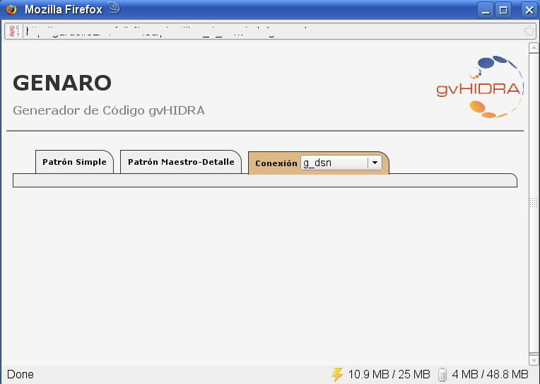
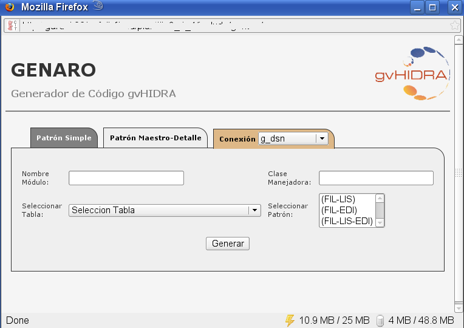
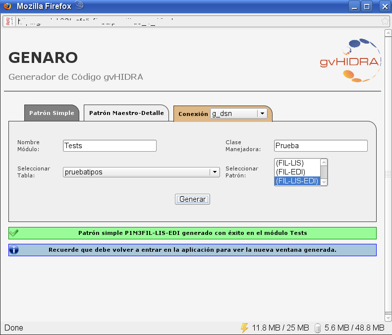
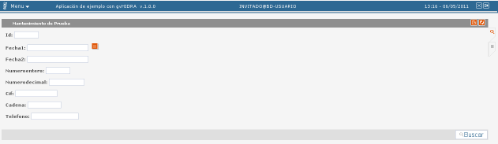
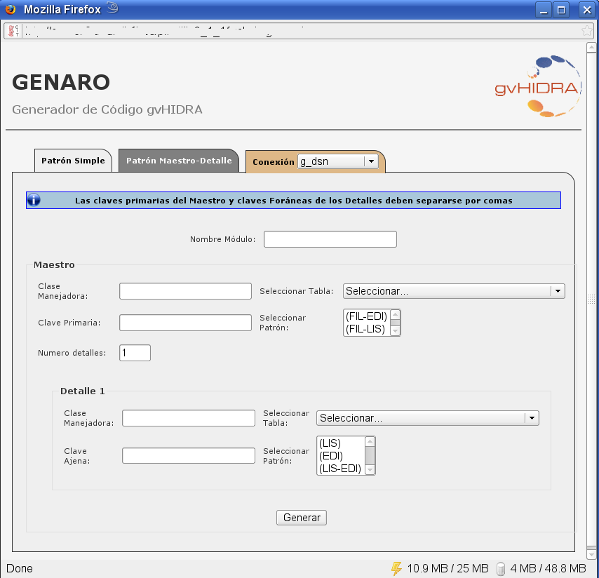
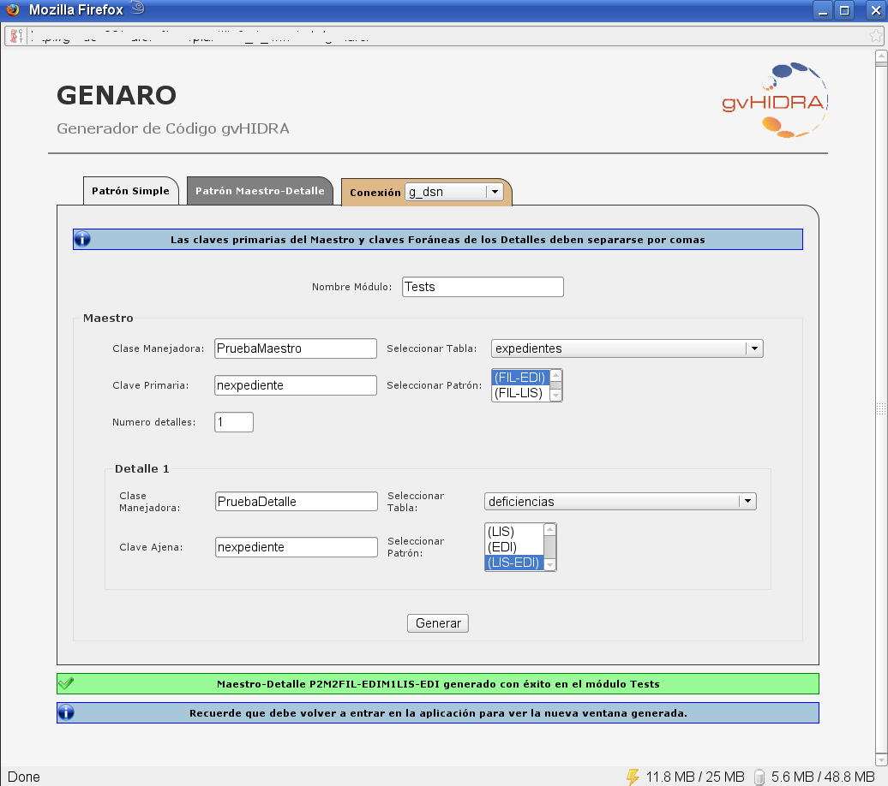
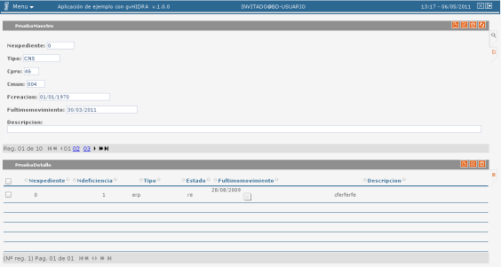
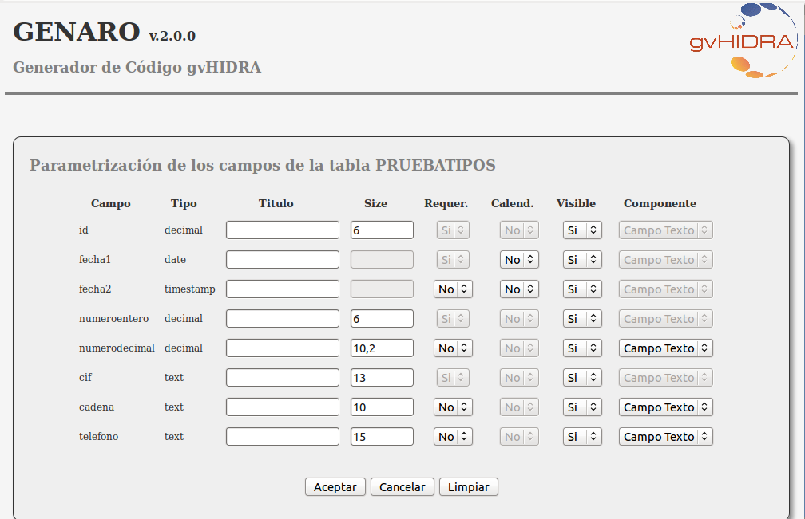

Desde las versiones 3.1.x, gvHidra cuenta con una herramienta de generación de código que nos permite generar de forma sencilla y rápida un mantenimiento. Esta herramienta, Genaro, a través de 5 parámetros básicos, se conecta a la base de datos y construye una ventana funcional. Los mantenimientos tienen la lógica necesaria para realizar la gestión de búsqueda, altas, bajas y modificaciones al 100%; pero no tienen lógica específica de la aplicación (validaciones específicas,...). Por esta razón, en la mayoría de los casos, debe entenderse como un punto de partida para nuestras ventanas.
La versión actual del genaro realiza por nosotros la generación de los siguientes ficheros:
actions: genera las clases manejadoras (1 o N dependiendo del patrón). Estas clases tienen las consultas, las asociaciones con los campos, las asociaciones entre los maestros y sus detalles (en el caso de estos patrones) y los tipos de datos (con las validaciones de los mismos). Desde la versión 2.0.0 se puede parametrizar parte de la información de los campos: tipo de componente, texto asociado, valor por defecto, ...
views: genera el fichero de la vista.
plantillas: genara la plantilla tpl de la ventana.
include: edita el fichero include para incluir en el proyecto las nuevas clases.
mappings: edita el fichero de mapeos para asociar las acciones con la clase que las gestiona (las nuevas clases manejadoras).
menuModulos.xml: edita el menu para que aparezca la nueva entrada. Agrupa esta entrada por el módulo.
En primer lugar tenemos que descargar el paquete de la web de gvHidra o directamente la última versión desde la forja de OSOR.
Desde la página de gvHidra (www.gvhidra.org)
Desde la forja de OSOR (http://forge.osor.eu/projects/genaro/)
Una vez descargado, lo dejamos en el directorio include de nuestra aplicación gvHidra. Si no tenemos aun la estructura de la misma consultar el punto "Instalación del entorno" en este mismo manual.
El genaro, recoge la información de las conexiones de nuestra aplicación, por lo que necesitamos que estén definidas en el fichero gvHidraConfig.inc.xml de la aplicación (ubicado en la raiz del proyecto).
Una vez definidas, debemos acceder a la herramienta http://<ubicacionAplicacion>/include/genaro. Por comodidad, se recomienda añadir esta entrada de menu en el menu de herramientas. Al acceder a esta url nos aparecerá el siguiente formulario.

Finalmente, para poder utilizar la herramienta tenemos que dar una serie de permisos de lectura/escritura ya que va a ficheros en nuestra estructura. Por ello, se debe dar permisos de lectura/escritura al usuario del servidor web (generalmente el usuario de Apache) a todo nuestro proyecto.
NOTA IMPORTANTE: Por seguridad, tanto el tema de permisos como el acceso a esta herramienta deben revisarse antes de sacar a producción. Se trata de una herramienta de desarrollo y SOLO debería estar disponible en dichos entornos.
En primer lugar, tenemos que escoger la conexión de base de datos que queremos utilizar. Para ello, en el desplegable de la parte superior derecha (al lado de las solapa de Patrón Maestro detalle), seleccionamos el dsn deseado. Los ids que aparecen, son los que hemos configurado en nuestra aplicación.
Una vez seleccionada la conexión, debemos decidir si vamos a generar un patrón simple o un patrón maestro detalle. Vamos a revisar cada una de las ventanas.
Para genarar un patrón simple tenemos la siguiente ventana

Debemos indicar los siguientes parámetros:
Nombre del módulo: es un agrupador de mantenimientos. Nos permite agrupar los mantenimiento de nuestra aplicación de forma que sea más sencillo su manejo.
Clase Manejadora: el nombre de la clase.
Tabla de la bd: tabla sobre la que queremos realizar el mantenimiento.
Patrón: seleccionamos la forma de visulización de la información (Tabular, Registro o Tabular-Registro).
Pulsamos generar y aparece la siguiente ventana:

Vamos a nuestra aplicación. Entramos de nuevo desde la validación (es importante porque borramos caches y cookies). Vemos que se ha creado una nueva entrada de menú y el resultado será algo como esto:

Nota: recomendamos ver en el código fuente todos los ficheros generados para entender la estructura del código.
Para generar patrones maestro detalle tenemos la siguiente ventana

Debemos indicar los siguientes parámetros:
Nombre del módulo: es un agrupador de mantenimientos. Nos permite agrupar los mantenimientos de nuestra aplicación de forma que sea más sencillo su manejo.
Seccion Maestro:
Clase Manejadora: el nombre de la clase del maestro
Tabla: tabla de la base de datos del maestro.
Clave Primaria: campos que componen la clave primaria del maestro.
Patrón: Seleccionamos la forma de visualización del maestro (Tabular o Registro).
Numero de detalles: número de detalles que va a tener nuestra ventana.
Seccion Detalle:
Clase Manejadora: el nombre de la clase del detalle
Tabla: tabla de la base de datos del detalle.
Clave Ajena: campos que relacionan la tabla con el maestro. Corresponde con los campos que son clave ajena referenciada a los campos de la clave primaria de la tabla maestro. Si son varios, debe respetarse el orden que se ha indicado en el maestro.
Patrón del detalle: Seleccionamos la forma de visualización del detalle (Tabular, Registro o Tabular-Registro).
Pulsamos generar y aparece la siguiente ventana

Vamos a nuestra aplicación. Entramos de nuevo desde la validación (es importante porque borramos caches y cookies). Vemos que se ha creado una nueva entrada de menú y el resultado es el siguiente:

Desde la versión 2.0.0 de GENARO, aparece un botón destinado a la parametrización de campos. Esto nos permite especificar información del panel que vamos a crear. Concretamente, al pulsar sobre el botón nos aparecerán todos los campos de la tabla seleccionada donde podremos especificar para cada uno de ellos:
Título: texto asociado que aparece vinculado al campo en la TPL. Permite identificar al usuario el campo
Tamaño: tamaño en pantalla que tendrá el campo para su visualización.
Requerido: indica si el campo es obligatorio o no.
Visible: indica si el campo es visible o no.
Componente: indica el tipo de componente: Lista, Radio, Area Texto o Campo de Texto.
Una vez acabada la parametrización, pulsando el botón Aceptar indicaremos al sistema que debe tener en cuenta dichos cambios. Con el botón Cancelar renunciamos a ellos y con el Limpiar borramos cualquier operación anterior. La siguiente imagen muestra la ventana de parametrización:

Hay una serie de recomendaciones que se deben tener en cuenta a la hora de utilizar el generador. La mayor parte de ellas tienen relación con el uso del SGBD Oracle. Con este motor, se dificulta la obtención por ingeniería inversa de la información de la tabla, por lo que se recomienda tener en cuenta:
Acceso a la información. En ocasiones, el usuario con el que se conecta no tiene acceso a la información. Por ello se recomienda utilizar el usuario propietario del esquema. En todo caso, si detecta problemas consulte con su DBA.
Generación de Maestros detalles: el sistema intentará proponer las relaciones entre el maestro y el detalle. Si no es capaz, dejará un check en el detalle que al marcarlo mostrará todas las tablas del sistema para que el usuario introduzca la relación.
Nombre de campos en mayúsculas. Debe tener en cuenta que el SGBD Oracle trabaja con los nombre de campos en mayúsculas, por lo que al introducirlos tome esa precaución para evitar problemas.